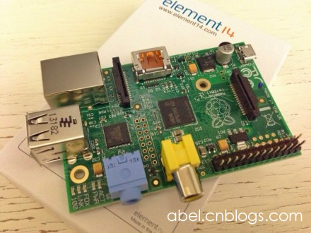
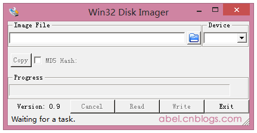
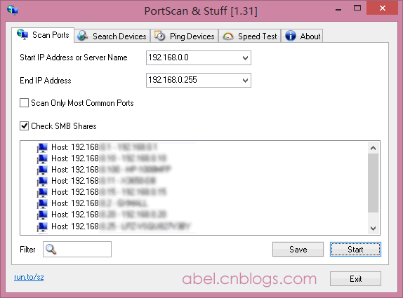
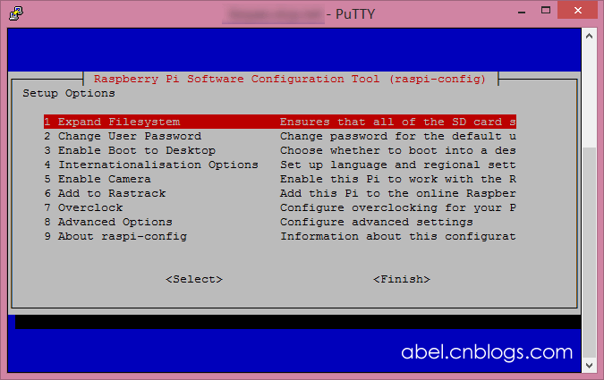
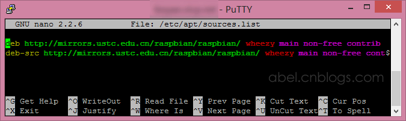

入手树莓派将近一个月了，很折腾，许多资源不好找，也很乱。简单整理一下自己用到的东西，方便以后自己或别人继续折腾。

树莓派官方 Raspbian 系统下载：http://www.raspberrypi.org/downloads
或直接下载 http://downloads.raspberrypi.org/raspbian_latest.torrent 最新版的 BT 种子。
还有一个选择是由国人制作的超级精简版，更低内存占用：http://pan.baidu.com/share/link?shareid=167943&uk=1412008571
所谓“安装系统”其实不如说是“恢复”下载到的系统镜像到内存卡上，这个过程也没什么难度，就是看内存卡的速度，慢慢等而已。需要注意的是，市面上部分 4G 的内存卡，实际大小才 3.6G 多，会提示空间不足，所以还是直接购买 8G 吧，也差不了几块钱。
在 Windows 下可以使用 Win32 Disk Imager 进行镜像恢复，非常方便，也是树莓派官方推荐的方法。官方下载地址：http://sourceforge.net/projects/win32diskimager/

老实说，我一直把树莓派定位为“一个扔在某个角落就可以自己跑得很欢的小电脑”，加上那仅有的两个 USB 口，一个插了 USB 无限网卡，另一个再拖个键盘或鼠标啥的，实在很不方便，那么最好还是能远程访问吧。
好在树莓派默认是有开启 SSH 的，但是我们系统刚安装，IP 还没设置，怎么找到它的 IP 地址呢？这时候就推荐使用另一个神器 PortScan 来找出我们的机器：

打开 PortScan 选择扫描范围，可以很方便的找出局域网中的其它机器，一般家庭中也没太多机器，找出树莓派是很容易的，如果是在公司，有很多机器的话，那么可以忽略那些有机器名的，然后剩下的一个一个尝试吧…
PortScan 下载地址：http://abel.oss.aliyuncs.com/file/PortScan.zip
如果你安装的是官方的 Raspbian 系统，那么默认的登录帐号为 pi 密码是 raspberry
为了方便折腾，建议第一时间启用 ROOT 账号吧~ 这个也很简单的，只需要执行一下两句命令即可：
# 设置 root 账号的密码，会让你输入两次新密码 sudo passwd root # 启用 root 账号登录 sudo passwd --unlock root
执行完之后，用 reboot 命令重启就可以用 root 登录啦。
第一次用 root 登录，会自动弹出树莓派的高级设置面板（以后也可以通过 raspi-config 命令进入）：

选择第一项 Expand Filesystem 扩展 SD 卡上可用的空间，不然以后会有很多大软件，不能安装（提示空间不足，例如 mysql）。
扩展之后可以通过 df -h 命令看到效果~
树莓派的服务器实在太太太太太太慢了！会导致你安装一个几M的东西都要等大半天！肿么办！
好在树莓派官方有提供一个镜像列表：http://www.raspbian.org/RaspbianMirrors
在里面找到了几个国内的镜像，经过几番尝试，觉得来自中科大的速度非常不错~ 咱们就换成中科大的吧，镜像主页：https://lug.ustc.edu.cn/wiki/mirrors/help/raspbian
根据教程，咱们来编辑 /etc/apt/sources.list 文件。这里推荐用 nano 命令编辑，舍得去弄什么 VIM 啦。命令如下：
nano /etc/apt/sources.list
进入编辑界面，删除原有的内容，粘贴中科大提供的内容，结果如下：

然后使用 Ctrl+O 保存文件，Ctrl+X 退出编辑器。
然后执行 apt-get update 命令更新软件列表。
回到刚刚第二点提到的，不知道 IP 地址的问题，咱们要给树莓派设置一个静态 IP，省得 IP 变换又要重新找机器。还是用 nano 来编辑网络接口文件：
nano /etc/network/interfaces
如果你要设置的是有线网卡的 IP 地址，那么把 eth0 的 dhcp 改成 static 然后在下一行追加 IP 信息，结果大概如下：
iface eth0 inet static address 192.168.1.200 # 设定的静态IP地址 netmask 255.255.255.0 # 网络掩码 gateway 192.168.1.1 # 网关
如果你要设置的是无线网卡的，那么除了把 wlan0 的 dhcp 改成 static 之外，还需要填写无线网的名称和密码，编辑后的结果大概如下：
iface wlan0 inet static
wpa-ssid Your_Wifi_SSID
wpa-psk Your_Wifi_Password
address 192.168.1.200 # 设定的静态IP地址
netmask 255.255.255.0 # 网络掩码
gateway 192.168.1.1 # 网关
network 192.168.1.1 # 网络地址
# wpa-roam /etc/wpa_supplicant/wpa_supplicant.conf
▲ 注意注释掉最后一行
搞定之后，咱们用 poweroff 命令关掉树莓派，等到机器上的绿灯不闪了，把电源拔掉，再把网线拔掉，重新连接电源，稍等一会，看看是不是就通过无线网络的 IP 地址可以访问了。
#. 最后 至此，要折腾树莓派的几个准备工作都完成了，有了这些，以后折腾也更佳方便。
由于我当初手贱没有购买面驱动的 USB 网卡，买的是一个要自己编译驱动的，所以我折腾的东西还有很多，下次专门再来说说无线网卡驱动的事吧。